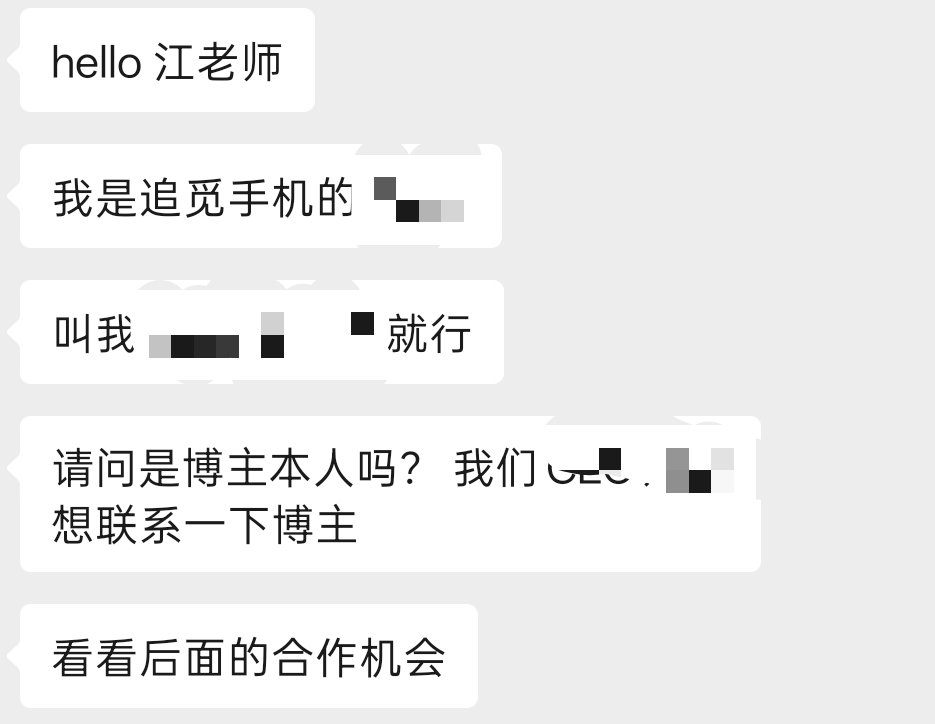

我见过企业从卖衣服转型人工智能的，也见过倾家荡产造火箭的
但是我没见过所有赛道全部启动启动启动，还有这个，撒币，外加ceo俞浩跟特么发颠一样的一天90多条视频，
你让我拍校园vlog，不限制题材我都拍不出来这么多，然后翻了几个，有对着一个公司宣传海报跟展厅里摆着的，然后一个400亿市值的公司说什么造百万亿级生态，然后还要什么改造地球
有一说一我觉得能投钱给这种人的不是冲着他小丑营销给他打赏就是学王多鱼钱多了没地方花

但是我没见过所有赛道全部启动启动启动，还有这个，撒币，外加ceo俞浩跟特么发颠一样的一天90多条视频，
你让我拍校园vlog，不限制题材我都拍不出来这么多，然后翻了几个，有对着一个公司宣传海报跟展厅里摆着的，然后一个400亿市值的公司说什么造百万亿级生态，然后还要什么改造地球
有一说一我觉得能投钱给这种人的不是冲着他小丑营销给他打赏就是学王多鱼钱多了没地方花

你们认为追觅造手机最终会不会成功🤔🤔🤔之前我做的那一套模块化手机的方案，全网差不多拿下了820多万的播放，然后他们的公关找到我，一开始我以为是商单合作，结果是他们CEO想联系我，不过后来或许太忙所以给忘了，现在好像他们热度挺高，宣布了做各种各样的新东西，你们对这家企业的未来怎么看？ https://t.co/k7ORnWF2I1